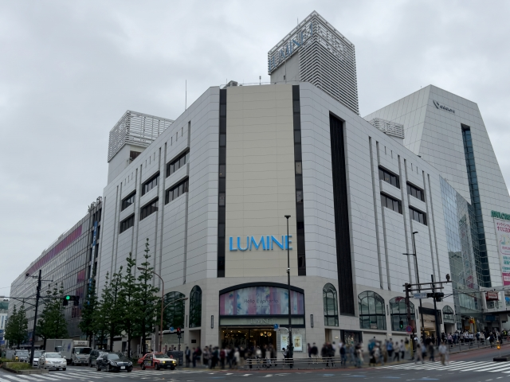

LOCATION
周辺環境
東新宿駅（徒歩1分）
都市の利便と自然の潤い、どちらも叶う東新宿。
現地周辺には日々の暮らしを快適に支えるスーパーやコンビニなどの生活利便施設が揃い、暮らしのすべてが手の届く距離に。
さらに、華やかな新宿駅周辺の大型商業施設やエンターテインメントも徒歩圏内に広がり、都市ならではの充実感と贅沢を日常の一部としてお楽しみいただけます。
そして、四季折々の美しい自然が息づく「戸山公園」もほど近く、都心にいながらも緑の潤いに癒される心地よい時間が待っています。
便利さと安らぎが織りなす上質な暮らしを心ゆくまでお楽しみください。
-
新宿駅周辺（徒歩17分）
-

伊勢丹新宿店（徒歩13分）
-

新宿イーストサイドスクエア（徒歩3分）
-

ルミネ新宿（徒歩20～24分）
-
新大久保コリアンタウン（徒歩11分）
-
三徳 新宿本店（徒歩4分）
※写真はイメージです。 -
新宿御苑（徒歩18分）
-
戸山公園（徒歩12分）
LIFE INFORMATION
-
-
ショッピング施設
- 味菜すみよし
- 3分
- 三徳 新宿本店
- 4分
- コープみらい コープ戸山店
- 4分
- まいばすけっと 東新宿駅北店
- 5分
- TOPmart新宿本店
- 5分
- マルエツ 新宿六丁目店
- 6分
- 肉のハナマサ 大久保店
- 7分
- 業務スーパー 東新宿店
- 11分
- ローソン 東新宿明治通店
- 現地1F
- 薬 マツモトキヨシ 大久保一丁目店
- 5分
- ドン・キホーテ 新宿店
- 9分
-
教育施設
- フロンティアキッズ新宿
- 6分
- きゃんばす東新宿保育園
- 7分
- あんしんつぼみ保育園
- 7分
- エイビイシイ保育園
- 7分
- コスモス保育園
- 7分
- 新宿区立戸山第二保育園
- 9分
- 大久保 わかくさ子ども園
- 2分
- しんじゅくいるまこども園
- 12分
- 大久保幼稚園
- 4分
- 新宿区立余丁町幼稚園
- 16分
- 新宿区立大久保小学校
- 3分
- 新宿区立新宿中学校
- 8分
-
-
-
医療機関
- 東新宿駅前クリニック
- 現地2F
- 新宿内科耳鼻科クリニック
- 現地2F
- 東新宿りん内視鏡内科クリニック
- 5分
- 慶幸会 東新宿クリニック
- 7分
- 沢田クリニック
- 8分
- 金内科クリニック
- 10分
- 余丁町クリニック
- 10分
- 国立国際医療研究センター病院
- 15分
- 東京女子医科大学病院
- 20分
-
その他
- 新宿警察署 新宿六丁目交番
- 6分
- 新宿区立大久保図書館
- 6分
- 新宿区役所
- 12分
- 戸山公園
- 12分
- 新宿御苑
- 18分
-